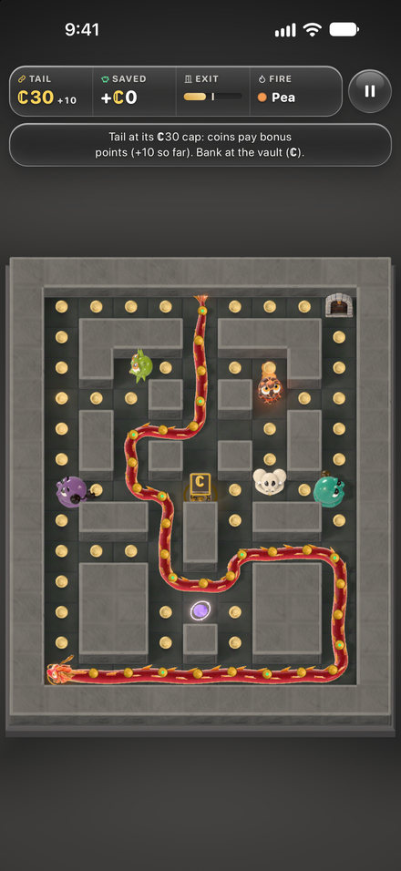
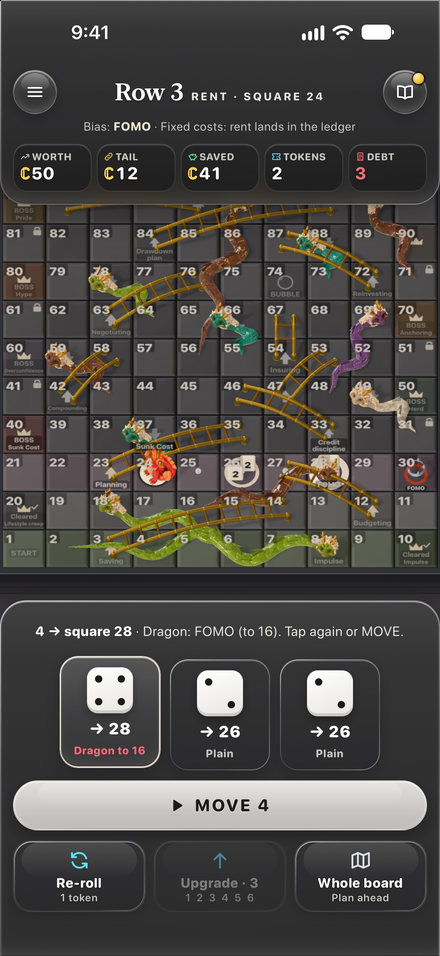
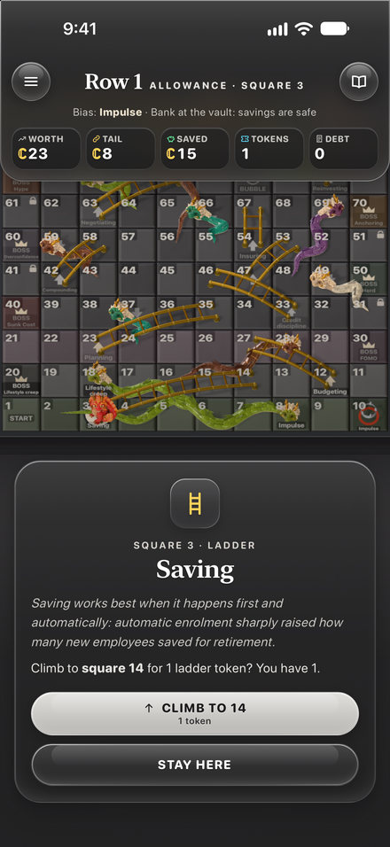
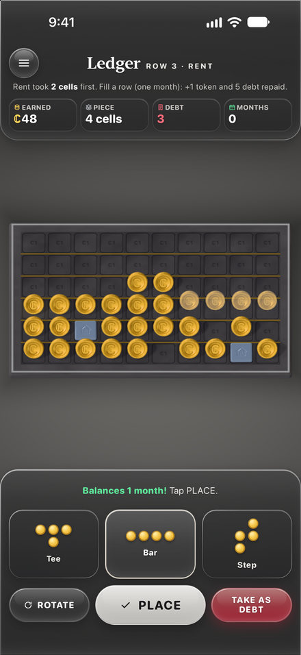
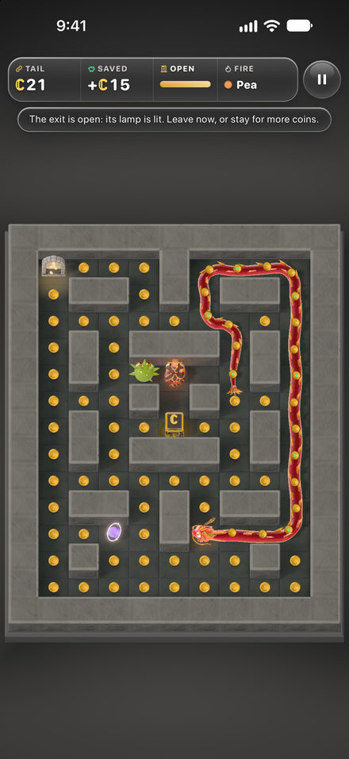
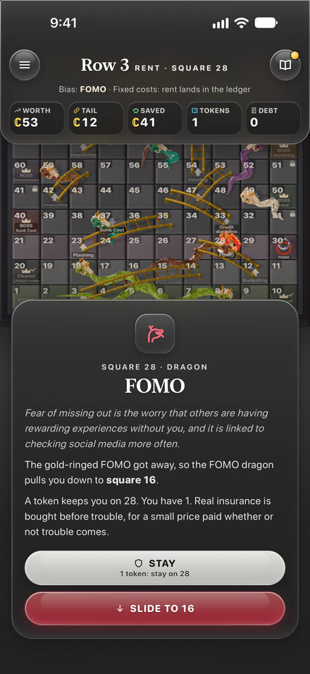
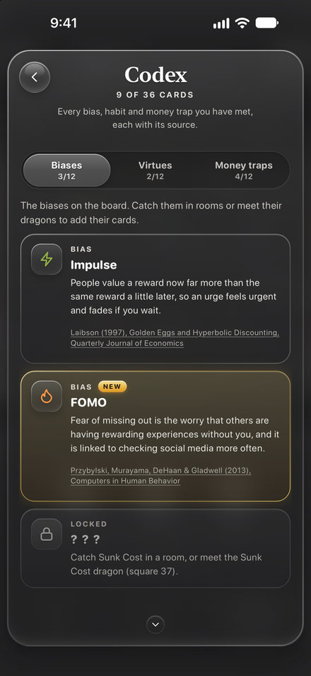
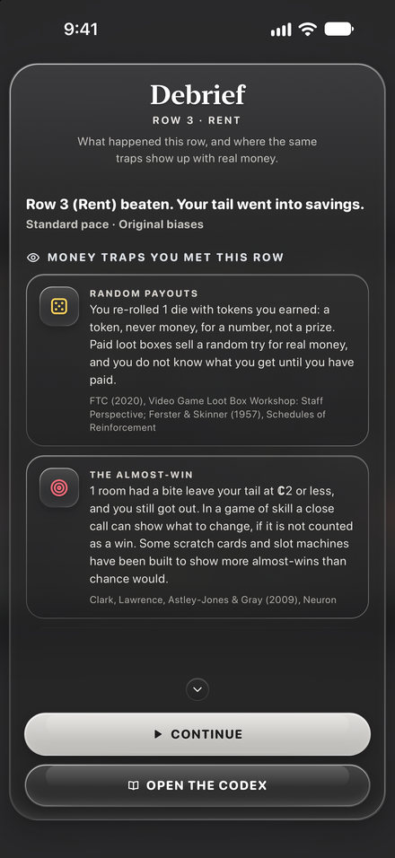
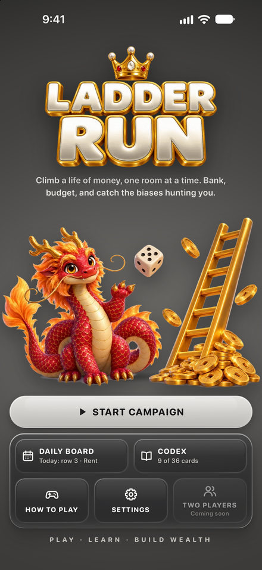

Ladder Run press kit
Ladder Run is a single-player strategy board game about money habits, played one maze room at a time. Ladder Run 1.1 is out now on the App Store for iPhone.
Factsheet
- Developer
- Montshiwa Ketlhaetse, an independent developer
- Release date
- 17 October 2026. Version 1.1 followed on 18 October 2026.
- Platform
- iPhone, iOS 17 or later
- Price
- Free to download, with one in-app purchase that unlocks rows 4 to 10 ($4.99 in the US; the App Store shows the local price). Rows 1 to 3 and the daily board are free. Nothing else is for sale: the game never sells ℂoins or tokens.
- Languages
- English
- Age rating
- 9+
- Size
- About 22 MB
- Category
- Games (Board and Strategy), Education
- Privacy
- Data Not Collected. No ads, no accounts and no analytics.
- Offline
- The game plays offline. Buying or restoring the full game needs a connection to the App Store.
- Availability
- The App Store for iPhone, in most countries and regions.
- Support page
- montshiwa1103-alt.github.io/ladder-run-pages/support
- Press contact
- press@ladderrun.com
- App Store
- apps.apple.com/app/ladder-run/id6818295332
Description
Ladder Run is a single-player strategy board game about money habits, played one maze room at a time. Your red dragon carries its ℂoins as its tail. Every coin makes it longer, the tail feeds its fire breath, and it is exactly what a bite takes.
Your dragon climbs 100 squares in ten rows, one life stage each, from Allowance to Legacy. Pick a die from a queue you can see ahead: each one shows where it lands before you choose. Ladders are good habits, from Saving to Giving: spend a token to climb one. The board's dragons are money biases that pull you down. In the room, catch the bias that carries it, or spend a token to stay put.
Every square your dragon lands on opens a maze room. From row 2, what you earn there arrives as a budget piece for the ledger. After every row a debrief shows up to four money traps you met, most with a real-money example, and a question to take away.
Rows 1 to 3 are free, and one purchase unlocks rows 4 to 10. There are no ads, no loot boxes, no wait timers and no notifications.
ℂoin is play money. It has no cash value, cannot be bought, and cannot be exchanged for money or prizes. The biases, dragons and money traps are learning models, not financial advice, forecasts or a test of how you think.
Features
- Ten life stages. Allowance, First job, Rent, Credit, Investing, Insurance, Career, Business, Retirement and Legacy. Each life stage adds a money rule: rent, interest on debt, compounding, a bubble that pops and a retirement drawdown. The last row adds giving.
- Maze rooms, played with one thumb. Every square your dragon lands on opens a maze room, built from ten hand-made layouts, mirrored and reshuffled. Tap a die, swipe anywhere to steer your dragon, and swipe straight back to swap its head and tail. Nothing moves until your first swipe.
- Five kinds of money bias. FOMO and Impulse hunt from row 1, Sunk Cost joins on row 3 and Herd on row 5. FOMO chases your dragon's head and speeds up as the coins run out. Sunk Cost aims where you are going. Herd mirrors FOMO's line. Impulse hunts from far away and loses its nerve up close. The Debt hunter drags a ball and chain, and turns up when your ledger debt piles up.
- The ledger. From row 2, what you earn in a room arrives as a budget piece. Place it in a 10 × 6 ledger: fill a row to balance a month, earn a token and repay some debt. A piece that fits nowhere becomes debt.
- The Codex. 36 cards to collect: 12 biases, 11 good habits, Fresh start and 12 money-trap cards (11 traps and one healthy counterpart). Every Codex card names its published source. The Money traps tab covers real-world tricks that shops, cards, ads and apps use, such as random payouts and the almost-win.
- The daily board. One row a day, the same board for everyone on that date, always at Standard pace with Original biases. It is free whichever row comes up, and your best score of the day is kept on your iPhone.
- Play your way. Three paces and three Biases settings, chosen when a campaign starts; slower or gentler at any time. Seven colours: Titanium, Frost, Celadon, Desert, Lotus, Onyx and Fjord. Three room views, a Reduce motion setting, and sound and haptics you can turn off.
- For classrooms. Type a name and class code, then share a spreadsheet and a one-page summary of your progress with your teacher, only when you choose.
Images
The nine App Store screenshots for version 1.1, in the default Titanium colours, with the title screen last. They are here for coverage of Ladder Run. Each one opens the full-size PNG (1320 × 2868).


















Logo and icon


Codes for reviewers
Writing about Ladder Run? Email press@ladderrun.com for a full-game code for rows 4 to 10, sent as a redemption link.
About the developer
Ladder Run is made by Montshiwa Ketlhaetse, an independent developer.
Contact
Press: press@ladderrun.com